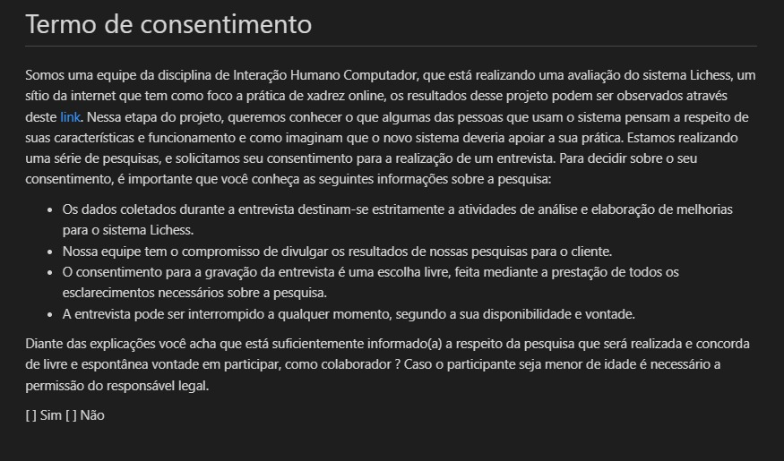

Planejamento da avaliação da Análise de tarefas
Introdução
Durante a etapa da Análise de requisitos foi realizada a Análise de tarefas com intuito de obter mais informações sobre as tarefas realizadas pelos usuários no sistema Lichess. Essa análise foi realizada levando em consideração o Perfil do usuário obtido por meio de questionários. A seguir, para uma análise mais detalhada é necessário a realização de entrevistas com usuários reais do produto, avaliando o ponto de vista do usuário de forma ativa, para isso será elaborado um Planejamento da Avaliação da Análise de tarefas e posteriormente a atividade será executada. Pois, segundo a obra "Interação Humano-Computador e Experiência do Usuário" de Simone D. J. Barbosa e Bruno Santana da Silva a realização da avaliação de IHC é essencial em qualquer processo de desenvolvimento com intuito de produzir um sistema interativo com alta qualidade de uso. Pois, essa ajuda o avaliador a fazer um julgamento de valor sobre a qualidade de uso da solução de IHC e a identificar problemas na interação e na interface que prejudiquem a experiência do usuário enquanto usa o sistema [1].
Planejamento
Foi utilizado o Framework DECIDE com intuito de orientar o planejamento, a execução e a análise da avaliação de IHC. Esse Framework é uma sigla onde cada letra representa uma etapa do planejamento, conforme a Tabela 1 a seguir:
| Letra | Significado |
|---|---|
| D | Determinar os objetivos gerais da avaliação |
| E | Explorar perguntas a serem feitas na avaliação |
| C | Choose (escolher) os métodos de avaliação |
| I | Identificar e administrar as questões práticas da avaliação |
| D | Decidir como lidar com as questões éticas |
| E | Evaluate (avaliar), interpretar e apresentar os dados |
Tabela 1: Descrição do Framework DECIDE (Fonte: [1], 2022).
Diante disso, a seguir encontra-se o detalhamento do planejamento utilizando o Framework em questão:
(D)eterminar os objetivos gerais da avaliação
Objetivo
O intuito dessa avaliação é coletar dados dos interessados no sistema (stakeholders), mais especificamente dos usuários e a suas interações com o sítio eletrônico e identificar problemas de interface que possam ser prejudiciais à experiência de uso, validando-se de critérios de qualidade como usabilidade, experiência do usuário, acessibilidade e comunicabilidade. Diante disso, o planejamento é relevante pois ao avaliar a qualidade de uso validando-se dele evita-se que sejam desperdiçados tempo e dinheiro. Dessarte, serão avaliadas questões relativas aos seguintes tópicos:
- Apropriação da tecnologia pelos usuários.
- Ideias e alternativas de design;
- Problemas na interação e na interface.
(E)xplorar perguntas a serem feitas na avaliação
As perguntas elaboradas têm como base a "Tabela 11.1: Exemplos de perguntas que uma avaliação de IHC pode responder" do livro "Interação Humano-Computador e Experiência do Usuário" de Simone D. J. Barbosa e Bruno Santana da Silva.
| Ordenação | Tópico da pergunta | Pergunta | Resposta possível | Tipo de pergunta |
|---|---|---|---|---|
| 1° | - | Qual seu nome completo ? | Resposta discursiva | Fechada |
| 2° | - | Qual sua idade ? | Resposta discursiva | Fechada |
| 3° | - | Qual sua ocupação ? | Resposta discursiva | Fechada |
| 4° | - | Qual o seu grau de ensino ? | Resposta discursiva | Fechada |
| 5° | - | Qual seu grau de experiência com tecnologias ? | Resposta discursiva | Fechada |
| 6° | 1 | Você utiliza o Lichess no seu dia a dia ? | - Sim - Não ❗Caso resposta seja não, não se deve realizar as outras perguntas |
Fechada |
| 7° | 1 | Quantas horas por dia e quantas vezes na semana você utiliza o Lichess ? | Resposta discursiva | Fechada |
| 8° | 1 | Quais são os pontos fortes e fracos do sistema, na sua opinião ? | Resposta discursiva | Aberta |
| 9° | 1 | O quanto você se sente motivado a explorar novas funcionalidades dentro do Lichess ? | - Sim - Não |
Fechada |
| 10° | 2 | Você costuma utilizar outras plataformas de xadrez ? | - Sim - Não ❗Caso resposta seja não, não se deve realizar a pergunta 10 |
Fechada |
| 11° | 2 | Qual delas você mais gosta ? Por que ? | Resposta discursiva | Aberta |
| 12° | 3 | Você consegue operar o sistema do Lichess com facilidade ? | - Sim - Não |
Fechada |
| 13° | 3 | Você atinge seu objetivo com rapidez ou ocorrem vários erros no processo ? | Resposta discursiva | Fechada |
| 14° | 3 | Que parte da interface e da interação o deixa insatisfeito ? | Resposta discursiva | Aberta |
| 15° | 3 | Você entende o que significa e para que serve cada elemento de interface? | - Sim - Não |
Fechada |
Tabela 2: Questões a serem tratadas na entrevista (Fonte: [1], 2022).
Choose (escolher) os métodos de avaliação
O método utilizado foi o método da entrevista, o qual é um método investigativo, que trata-se de uma conversa guiada por um roteiro de perguntas, na qual um entrevistador busca obter informação de um entrevistado [2]. Esse método foi escolhido, pois permitem ao avaliador ter acesso, interpretar e analisar concepções, opiniões, expectativas e comportamentos do usuário [1]. Na entrevista as perguntas podem ser classificadas como abertas e fechadas, que são respectivamente, perguntas de natureza exploratória e perguntas com opções dentre as quais o entrevistado deve selecionar. O modelo de entrevista escolhido foi o de entrevista estruturada, no qual o entrevistador se mantém fiel ao roteiro, devido à inexperiência dos entrevistadores.
(I)dentificar e administrar as questões práticas da avaliação
O recrutamento de usuários que participarão da avaliação será feito por meio de convites a usuários da plataforma ques com perfis similares aos identificados no Perfil de Usuário) e nas Personas. Serão avaliados 5 usuários, pois segundo Dumas e Redish uma avaliação de IHC deve envolver de cinco a doze usuários, mas apenas cinco são o suficiente para detecção da maioria dos problemas[3]. A entrevista será conduzida por dois membros do grupo de IHC, para que um possa conduzir a entrevista e outro possa anotar as informações relevantes, não serão necessários gastos devido a utilização da plataforma Microsoft Teams, a qual é gratuita para os estudantes da Universidade de Brasília. O cronograma a ser seguido pode ser observado a seguir nas tabelas de 3 a 7
Entrevista 1
| Entrevistadores | Entrevistado | Data | Horário de início e fim | Local |
|---|---|---|---|---|
| - | [DATA] | [HORÁRIO] | Plataforma Teams |
Tabela 3: Cronograma da entrevista 1 (Fonte: [1], 2022).
Entrevista 2
| Entrevistadores | Entrevistado | Data | Horário de início e fim | Local |
|---|---|---|---|---|
| - | [DATA] | [HORÁRIO] | Plataforma Teams |
Tabela 4: Cronograma da entrevista 2 (Fonte: [1], 2022).
Entrevista 3
| Entrevistadores | Entrevistado | Data | Horário de início e fim | Local |
|---|---|---|---|---|
| - | [DATA] | [HORÁRIO] | Plataforma Teams |
Tabela 5: Cronograma da entrevista 3 (Fonte: [1], 2022).
Entrevista 4
| Entrevistadores | Entrevistado | Data | Horário de início e fim | Local |
|---|---|---|---|---|
| - | [DATA] | [HORÁRIO] | Plataforma Teams |
Tabela 6: Cronograma da entrevista 4 (Fonte: [1], 2022).
Entrevista 5
| Entrevistadores | Entrevistado | Data | Horário de início e fim | Local |
|---|---|---|---|---|
| - | [DATA] | [HORÁRIO] | Plataforma Teams |
Tabela 7: Cronograma da entrevista 5 (Fonte: [1], 2022).
(D)ecidir como lidar com as questões éticas
Com relação à ética serão seguidos os padrões de ética definidos no documento de Aspectos Éticos, o termo de consentimento relativo à entrevista pode ser observados logo a seguir na Figura 1.

Figura 1: Termo de consentimento da entrevista (Fonte: [1]).
(E)valuate (avaliar), interpretar e apresentar os dados
Antes da conclusão da análise dos resultados serão verificados o grau de confiabilidade dos resultados obtidos e a validade externa do estudo, ou seja até que ponto os dados podem ser generalizados
Planejamento do teste piloto
O teste piloto será realizado por dois avaliadores como se fosse uma sessão normal de avaliação antes da entrevista real com os usuários com o intuito de garantir que todas as ferramentas estão funcionando de acordo com o planejado, verificar o próprio planejamento, e analisar se a avaliação, poderá produzir os dados necessários para o estudo, além de verificar a clareza e objetividade da linguagem utilizada na entrevista [1].
Bibliografia
[1] BARBOSA, Simone; DINIZ, Bruno. Interação Humano-Computador. Editora Elsevier, Rio de Janeiro, 2010.
[2] Seidman, Irving (2019). Interviewing as Qualitative Research: A Guide for Researchers in Education and the Social Sciences. Teachers College Press, New York, NY, 5th edition edition.
[3] Dumas, Joseph S. e Redish, Janice C. (1999). A Practical Guide to Usability Testing. Intellect Books, GBR, 1st edition.
Histórico de Versão
| Versão | Data | Descrição | Autor(es) | Revisor(es) |
|---|---|---|---|---|
1.0 |
13/12/2022 | Criação do documento | Lucas Gabriel | Nicolas Souza |